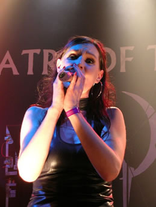

Entrevista
de Nell Sigland à Lords of Metal - 2008
Você
substituiu a vocalista Liv Kristine, como é ser a nova
vocalista do Theatre of Tragedy? E qual as primeiras reações
dos fãs?
No princípio era estranho substituir
Liv e pra ser sincera eu também estava me sentindo um
pouco amedrontada. Mas eles eram muito amigáveis e os
fãs também me aceitaram bem. Eu encontrei meu
lugar no Theatre of Tragedy e tudo vai muito bem. Liv também
é muito simpática. Ela tem a própria banda
e está muito satisfeita.
O Theatre of Tragedy é uma
banda denominada Gothic Metal. Você se vê como a
face da banda por ser a vocalista feminina?
Não,
eu não penso que sou a face da banda. Todo mundo é
igual; isto é o Theatre of Tragedy. Eu não sou
a líder; há seis pessoas que trabalham juntas.
A
banda já existe há muito tempo e lançou
seis álbuns antes de você chegar. Qual o seu álbum
favorito antes de Storm ser lançado e de que música
você gosta mais de cantar? Era difícil interpretar
as canções mais antigas?
Quando
o baterista me convidou a participar da banda eu pensei: "Oh
meu Deus, eu não posso". Eu não gostei da
banda. Eu nunca fui uma grande fã e não sentia
que esta música me atraia. Depois eu tive que repensar
minha postura quando percebi que Raymond era um grande vocalista
e seria ótimo cantar ao lado dele. No início eu
disse a eles que não queria cantar as músicas
antigas. Eu me lembro quando estava falando isso a eles e eles
se olharam, riram e disseram: "Sim! Justo.". Entretanto
nós ensaiamos algumas canções mais antigas
como Black As The Devil Painteth, And When He Falleth,
On whom The Moon Doth Shine e The Masquerader And
Phoenix (todas do álbum Velvet Darkness They
Fear) eu pensei sozinha: "Isto é legal".
Realmente valeu e eu gostei até mesmo das partes com
vocais guturais. Claro que nós temos que fazer novas
canções mas sem abandonar as mais antigas por
que os fãs esperam isso de nós. Mas realmente
eu não sei dizer qual o meu álbum favorito ou
canção antes de Storm. Além disso, não
era difícil fazer as canções anteriores
do meu próprio jeito. Mas a voz de Liv estava constantemente
em minha cabeça, mas depois eu decidi cantar todas do
meu próprio modo.
Após a turnê de Storm
o Theatre of Tragedy não se manifestou mais. O website
não foi mais atualizado desde outubro de 2007. Você
pode explicar por que isto aconteceu e quais são os planos
da banda?
Eu não tenho idéia porque
o website e o Myspace não foram mais atualizados. Nosso
Myspace era uma fonte de informações. Pra ser
sincera, não tenho idéia de que seja o responsável
por estes sites. Além disso, alguns membros da banda
estão ocupados com estudos e exames. Eles fundaram o
Theatre of Tragedy quando ainda eram muito jovens e não
tiveram oportunidade de concluírem os estudos. Essa é
uma das razões.
Nosso foco está no próximo álbum. Nós
queríamos gravá-lo no verão passado mas
tivemos alguns problemas com o estúdio e decidimos aguardar
até o próximo verão. Nós também
tivemos algumas decepções em algumas apresentações
que foram canceladas mas não por nossa vontade. Nós
temos a expectativa de participar de alguns festivais no próximo
verão mas ainda não há nada confirmado.
Mas falemos
sobre o próximo álbum... Será no estilo
de Storm?
No próximo álbum haverá
algumas faixas semelhantes as do Storm mas nós
também temos algumas mudanças. Isso não
é nenhuma novidade para o Theatre of Tragedy. Escute
Assembly e Musique, não são
trabalhos que possam ser comparados com Velvet Darkness
They Fear. Mas é claro que também falamos
com o produtor. As canções estão prontas
mas há tempo de fazer algumas mudanças. Também
estamos trazendo material novo; temos bastante material sem
dúvida. O resto eu prefiro não falar, em breve
você poderá ouvi-lo.
No seu perfil do site oficial da
banda eu posso ver que você é professora. Você
é professora de quê?
Eu
sou professora de música e canto; mas também dou
lições de arte (moda, escultura) e religião.
A coisa da religião é tão importante hoje
em dia; até mesmo se você não acredita em
Deus ou algo assim. É algo que tem que estar na sua educação.
É por isso que eu amo ensinar crianças; lecionando
sobre culturas e civilizações. A propósito
eu sou professora de crianças entre treze e dezessete
anos.
Eu acredito que você seja
muito criativa...
Sim, eu amo muito meu trabalho e não
tenho tempo de fazer as coisas em casa. Mas me sinto satisfeita
depois que volto pra casa após um dia de trabalho na
escola.
Você também é
membro da banda gótica norueguesa The Crest.
Você formou esta banda junto com Kristian Sigland. Também
esteve inativa durante algum tempo. Em 2003, você decidiu
fazer uma pausa com este trabalho e se dedicar a um projeto
paralelo chamado Rustflower Incorporated.
Há planos para um lançamento com The Crest
em 2008. Você pode nos falar mais sobre estas coisas?
Kristian e compositor estavam cansados
de escrever. Então nós decidimos abandonar o trabalho.
Fiquei com o coração partido porque esta foi minha
primeira banda e significou muito pra mim. Após a separação
do The Crest nós enviamos uma demo da Rustflower
à Season of Mist. Nós esperávamos
que eles não gostassem muito do trabalho mas surpreendentemente
eles gostaram. Mas Rustflower não existe mais.
Há um tempo atrás nos reunimos novamente com os
integrantes do The Crest. Então começamos
a compor para um novo álbum e enviamos as músicas
para a Season of Mist e perguntamos se eles podiam
bancar um estúdio porque nós não temos
muito dinheiro. Mas eles não estão dispostos a
pagar pelo estúdio. Assim, nós estamos esperando
por alguém que banque o estúdio.
Você está muito ocupada
com o Theatre of Tragedy, The Crest e sendo professora.
Como você consegue combinar todas estas coisas. Você
poderia deixar seu trabalho como professora?
Eu
tive tanta sorte com meu chefe na escola que eu não pensei
nesta questão. Ele disse que quando eu tiver uma turnê
ou uma apresentação eu posso me ausentar desde
que alguém possa ocupar a minha vaga enquanto eu estiver
fora. Mas eu sou aquele tipo de pessoa que pode ficar meses
na estrada.
Uma última pergunta: Você
pode falar o que o Theatre of Tragedy está preparando
para 2008?
Esperamos lançar o álbum
em 2008 e é importante para nós que façamos
a música que gostamos. Seremos verdadeiros com nossos
fãs.
Talvez uma mensagem de Nell?
Eu espero que
os fãs nos apóiem agora e no futuro. Eu sei que
estivemos calados por algum tempo para temos de ser pacientes.
Alguns fãs ficam decepcionados por não haver informações
no site da banda mas quando tudo estiver resolvido e os estudos
terminados continuaremos. Essas são algumas coisas importantes
para nós. Esperamos fazer algumas apresentações
(também na América do Sul) num futuro próximo.
Obrigada.
Extraída
de www.lordsofmetal.nl
Traduzida
e adaptada por Spectrum